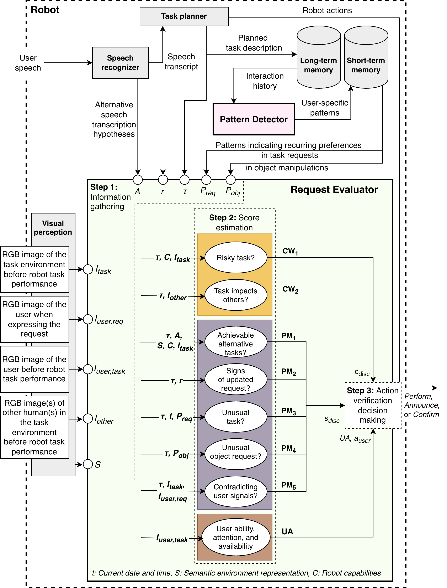

Service robots may receive verbal task requests that appear explicit and executable; however, the detected or interpreted request does not match the user’s actual intent. Verifying every request can unnecessarily interrupt users and delay assistance. To address this issue, we present SPActV, an architecture for selective and personalized action verification that determines whether a service robot should perform a requested task as detected, announce its intended action, or defer task completion until explicit user confirmation. SPActV utilizes language and vision-language models and uniquely integrates visual observations, speech-recognition alternatives, and user preferences inferred from their previous requests to select an appropriate action verification strategy. A service robot's decision to verify actions is determined by jointly considering evidence of intent discrepancy, potential safety risks and impacts on other people, and the user’s ability, attention, and availability to intervene. We evaluated SPActV in domestic assistance scenarios, each with intent-discrepancy and intent-matched variants, and compared the behavior of a robot with and without SPActV in real-world office assistance demonstrations. Furthermore, an ablation study was conducted to determine the importance of design choices in SPActV. Our findings support the importance of combining personalized and contextual evidence to verify user requests.
When a user makes a verbal request, the Speech Recognizer transcribes the request and provides the transcript to the Task Planner, which generates executable robot actions and a description of the planned task. The Request Evaluator gathers this description, the speech transcript, and alternative speech-recognition hypotheses. It also obtains visual observations and a semantic representation of the environment from Visual Perception, along with recurring task and object preferences inferred from previous requests by the Pattern Detector (Step 1, Information gathering). Using these inputs, VLM #1 estimates the potential safety risk of performing the task (CW₁). VLM #2 estimates the potential impact on other people (CW₂), assesses evidence of a discrepancy between the interpreted request and the user’s actual intent (PM₁–PM₅), and evaluates the user’s ability, attention, and availability to intervene (UA) (Step 2, Score estimation). The Request Evaluator combines these scores to determine whether the robot performs the task as detected (Perform), announces its intended action and allows time for correction (Announce), or asks for explicit user confirmation before proceeding (Confirm) (Step 3, Action verification decision making).
